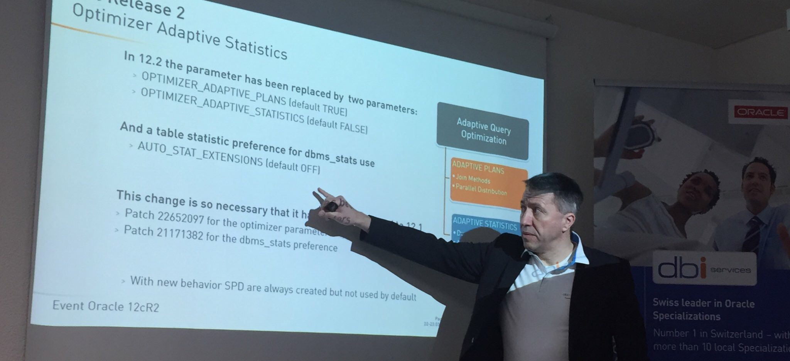
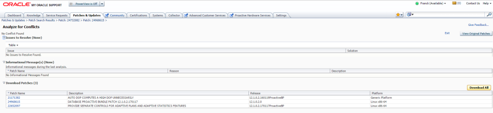
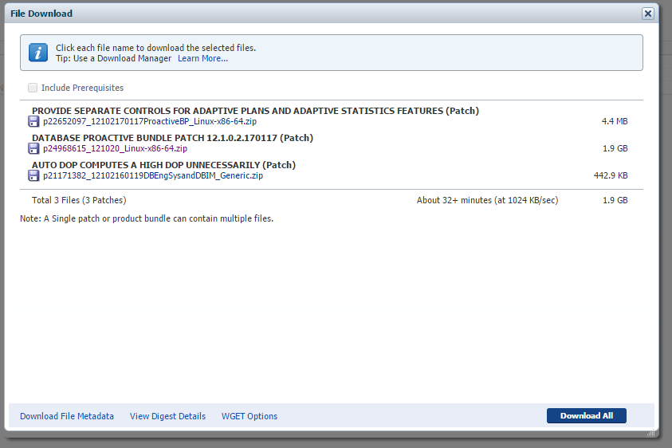

|
|
This was first published on https://blog.dbi-services.com/jan17-proactive-bundle-patch-adaptive-statistics-control (2017-03-27)
Republishing here for new followers. The content is related to the the versions available at the publication date
If you have to create a new database now (I’m writing this in March 2017) for a migration of OLTP database with minimal risks of regression, I would recommend:
This post gives more detail about it and which patches to apply. It would be nice to have those patches merged into each bundle patch, but it is not.
This Month, the 12cR2 was released and we immediately informed our customers about the new features that we think are important to know in order to plan when to go to 12.2 and for which projects. We started with the most important one, the Adaptive Statistics which helps to avoid all those performance issues encountered after migrating to 12cR1. We also mentioned that this new behavior has been backported to 12.2 with two patches, as explained here by Clemens Bleile: 
This event was to inform about 12.2 but lot of customers waited for this to plan their 12.1 migration. Knowing the roadmap and the new features helps to plan what can wait for a stable 12cR2 (after few PSUs) and what must be migrated now to 12cR1. This is why we did everything to rollout this event as soon as possible once the main platform (Linux and Windows) were publicly available.
Our recommendation for new installations of 12c for current migration with minimal risks of regression is
Nothing is easy with patching, so I’ll detail how to find exactly what to install.
Now that the latest version is 12.2.0.1 you cannot find anymore the 12.1.0.2 on the oracle.com download page. You can download 12.1.0.2 from the Patchset 21419221: https://updates.oracle.com/download/21419221.html
Finding the latest patch set update is easy if you follow the MOS Note Quick Reference to Patch Numbers for Database/GI PSU, SPU(CPU), Bundle Patches and Patchsets (Doc ID 1454618.1)
You will download https://updates.oracle.com/download/24968615.html for Linux or https://updates.oracle.com/download/25115951.html for Windows.
Then you have to find the two patches to apply them on top of the JAN17 ProactiveBP.
The first one is for separate parameters to enable adaptive plans and adaptive statistics separately: https://updates.oracle.com/download/22652097.html and you can find it for Oracle 12.1.0.2.170117 Proactive BP
The second one is for dbms_stats preference to control statistics extensions creation and you will have two suprises when following the link: The name is AUTO DOP COMPUTES A HIGH DOP UNNECESSARILY because the change has been merged with some other changes on concurrent statistics It is available only for (listed in the non-chronological order of the platform list on MOS):
If you want to go further, you have to open a SR, provide an opatch lsinventory (because it seems that Oracle Support Engineers are not able to get the lsinventory for the latest Proactive BP – the recommended one). And this is where the nightmare starts. The lastest we have here is for JAN16 Proactive Bundle Patch – 12.1.0.2.160119 Proactive BP.
I can’t wait for a relevant answer from MOS support engineers, so I got to look at the patch. It is very simple change actually.In DBMS_STATS it has to check whether AUTO_STAT_EXTENSIONS is ON before creating the column group. This is all in prvtstat.plb and if we are lucky there were no changes on it since the JAN16.
Before trying it, we can check conflicts in MOS. Here are the 3 patches I would like to apply, in their most recent release for Linux:
Yes, this is a nice feature of My Oracle Support: you can analyze the conflicts online.
The result of conflict analysis shows that we are lucky: 
Ready now to download the files: 
So the last patch we need, https://updates.oracle.com/download/21171382.html, can be downloaded in its latest Proactive BP version, even if it is 1 year old. And don’t worry about its name: p21171382_12102160119DBEngSysandDBIM_Generic.zip
Don’t forget to run datapatch on your databases to be sure that the dictionary is patched.
$ORACLE_HOME/OPatch/datapatch
SQL Patching tool version 12.1.0.2.0 Production on Mon Mar 27 09:18:47 2017
Copyright (c) 2012, 2017, Oracle. All rights reserved.
Connecting to database...OK
Bootstrapping registry and package to current versions...done
Determining current state...done
Adding patches to installation queue and performing prereq checks...done
Installation queue:
Nothing to roll back
The following patches will be applied:
24732088 (DATABASE BUNDLE PATCH 12.1.0.2.170117)
21171382 (AUTO DOP COMPUTES A HIGH DOP UNNECESSARILY)
22652097 (PROVIDE SEPARATE CONTROLS FOR ADAPTIVE PLANS AND ADAPTIVE STATISTICS FEATURES)
Installing patches...
Patch installation complete. Total patches installed: 3
Validating logfiles...done
SQL Patching tool complete on Mon Mar 27 09:21:33 2017
And then connect to check the new Adaptive Statistics behavior:
SQL> show parameter optimizer_adaptive
NAME TYPE VALUE
------------------------------------ ----------- ------------------------------
optimizer_adaptive_plans boolean TRUE
optimizer_adaptive_reporting_only boolean FALSE
optimizer_adaptive_statistics boolean FALSE
SQL> select dbms_stats.get_prefs('AUTO_STAT_EXTENSIONS') from dual;
DBMS_STATS.GET_PREFS('AUTO_STAT_EXTENSIONS')
--------------------------------------------------------------------------------
OFF
Don’t install a 12c database with only the software and documentation that was released 3 years ago. Lot of migration feedback has improved the stability of such migration, and this is implemented in patchset updates and MOS notes. A good source of information is Mike Dietrich blog (the best source you can find to benefit from lot of migration projects experience):
Then, get the latest recommended software.
Don’t forget to run datapatch on all databases, even the newly created ones.
Here is the equivalent for April 2017 Bundle Patch:

p25755742_122010_Linux-x86-64.zip: 25397136 (DATABASE BUNDLE PATCH: 12.1.0.2.170418)
p21171382_12102170117ProactiveBP_Generic.zip: 21171382 (ADD CONTROL FOR AUTOMATIC CREATION OF STATS EXTENSIONS)
p22652097_12102170418ProactiveBP_Linux-x86-64.zip: 22652097 (PROVIDE SEPARATE CONTROLS FOR ADAPTIVE PLANS AND ADAPTIVE STATISTICS FEATURES)
The nice thing is that the description of 21171382 is now meaningful.
Or you want the PSU rather than the ProactiveBP:
|
|
{kind=link}
{kind=link}
{kind=link}
{kind=link}
{kind=link}
Hi Franck! Thanks for sharing of these useful details! Just one question – is the 12cR2 typo error in this sentence (2x 12cR2 instead of 12cR1): “latest patchset of Oracle Database 12cR2: 12.1.0.2″
or did you mean “latest patchset of Oracle Database 12cR1: 12.1.0.2″ ?
Kind regards Dejan
Hi Dejan, Yes you’re right. I’ve fixed it in the text to avoid confusion. Thanks a lot, Franck.